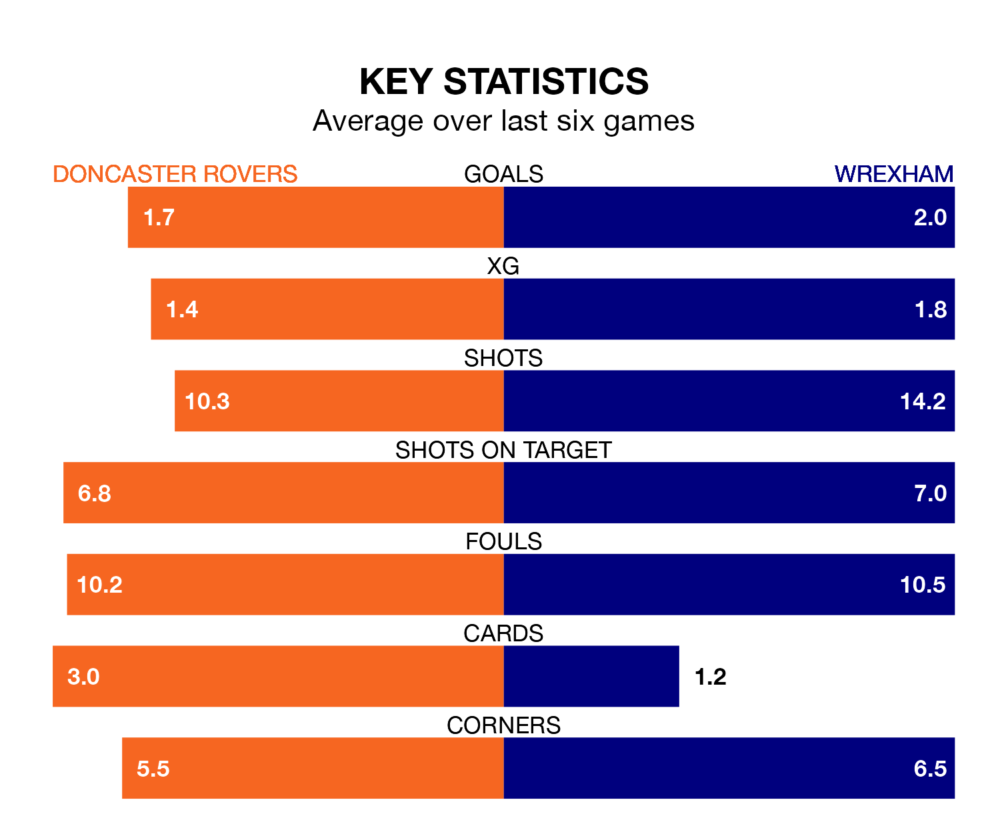

Wrexham are strong favourites to take all three points despite Doncaster Rovers' home advantage in Tuesday's late match at the Eco-Power Stadium.
*Betting Company* are offering odds of 2.0 on Wrexham sealing the win, with the visitors sitting third in EFL League Two table.
Doncaster, who are 15th in the league and 21 points behind the Dragons, are priced at 3.3 to win. A draw is set at 3.5.
With 72 goals in 40 games so far this season, Wrexham are scoring more than average in the league with 1.8 goals per game. And they are conceding fewer than average, letting in 48 goals at a rate of 1.2 per game.
Doncaster, meanwhile, are below average scorers, with 1.4 goals per game, compared to a league average of 1.5. They have conceded 1.6 goals per game.
In Arthur Okonkwo, the Dragons can rely on one of the league's safest pair of hands. He has kept 12 clean sheets in his 30 appearances this season in EFL League Two.
In Rovers' net, Louis Jones has four clean sheets in 19 games. He has conceded a goal every 61 minutes, 70% more often than the 106 minutes between goals for Okonkwo.
The Rovers are in good form in EFL League Two, with four wins and a draw from their last six games.
And also with four wins and a draw over that period, the visitors' form is identical – they have both taken 13 points from 18.
Doncaster's last match was on Friday, a 2-0 win against Crawley Town, with Hakeem Adelakun and Maxime Biamou Ngapmou Yoke getting the goals for the Rovers.
Wrexham beat Mansfield Town 2-0 last time out, also on Friday, with Paul Philip Mullin on the scoresheet.
Tuesday's match will be refereed by Charles Breakspear, who has taken charge of 10 EFL League Two games so far this season, issuing two red cards and booking 43 players. He has awarded six penalties.
The last Wrexham game Breakspear refereed was the 5-5 draw at home against Swindon Town on August 19. He is yet to oversee a match featuring Doncaster this season.
Updated: 10:31 (UTC), 31/03/24